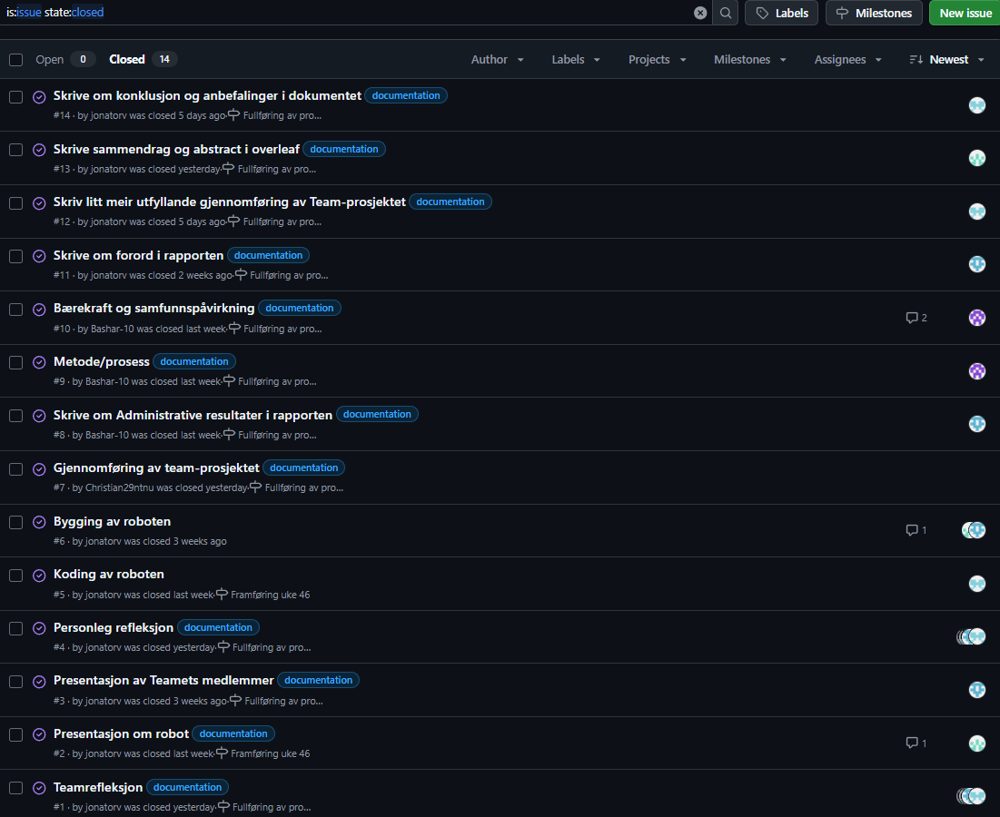

Oppgavebeskrivelse
I dette emnet jobbet vi med en Lego-robot som skulle løse oppgaver som linjefølging, navigasjon og hindringsunngåelse. Prosjektet ble avsluttet med et Lego-Rally der roboten konkurrerte mot andre grupper.
Teknologi og verktøy
- Lego Mindstorms / Spike
- Programmering i f.eks. Python eller blokkbasert miljø
- Sensorer som lyssensor og avstandssensor
Mitt bidrag
Jeg hadde hovedansvar for programmering av robotens kjernelogikk og feilsøking under testfasen. I tillegg bidro jeg til dokumentasjon av løsningen og justering av parametere for å få stabil kjøring.
Refleksjon
Hva var oppgaven?
Å designe, programmere og teste en Lego-robot som kunne løse konkrete oppgaver og gjennomføre et Lego-Rally.
Hva lærte jeg?
- Hvordan små kodeendringer påvirker fysisk oppførsel
- Praktisk bruk av sensorer og styring av motorer
- Viktigheten av iterativ testing og justering
Hvordan kan jeg bruke dette i jobb?
Erfaringen er relevant for arbeid med automasjon, innebygde systemer og annen teknologi der både programvare og maskinvare må fungere godt sammen.
Prosjektoppgave
I prosjektoppgaven vår lagde vi en trappeklatrende robot, som skulle i teorien frakte medisin til eldre folk. Gjennom oppgaven dokumenterte vi prosessen, og skrev en detaljert prosjektrapport. Hvis du vil vite alt om prosjektet er det bare å åpne lenken under.
Prosjektrapport
Åpne prosjektrapporten (PDF)Prosessdokumentasjon
